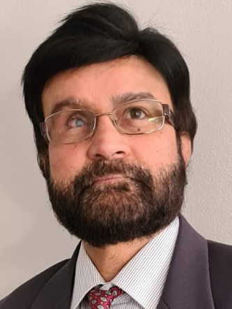

Rajeev KUMAR

A telecommunication professional with extensive experience in PSTN,DSS and ISDN network. Born,raised,educated and grew up in India.
Work experience
A Technical support Engineer with hands-on experiences in managing and leading solutions for hardware problems in:
Telecommunication Industry particularly for S12
Lab Management
• As a member of a leadership group, involved in strategic planning, project planning and estimation and process improvement initiatives.
• Excellent work ethics with result oriented and customer focus approach to problem solving.
• Strong project management and team leading skills.
• Proven performer in meeting time to market requirement
Hobbies
- Music.
- Movies.
- Reading books.
- Short hiking trips.
- Maintaining a healthy lifestyle .